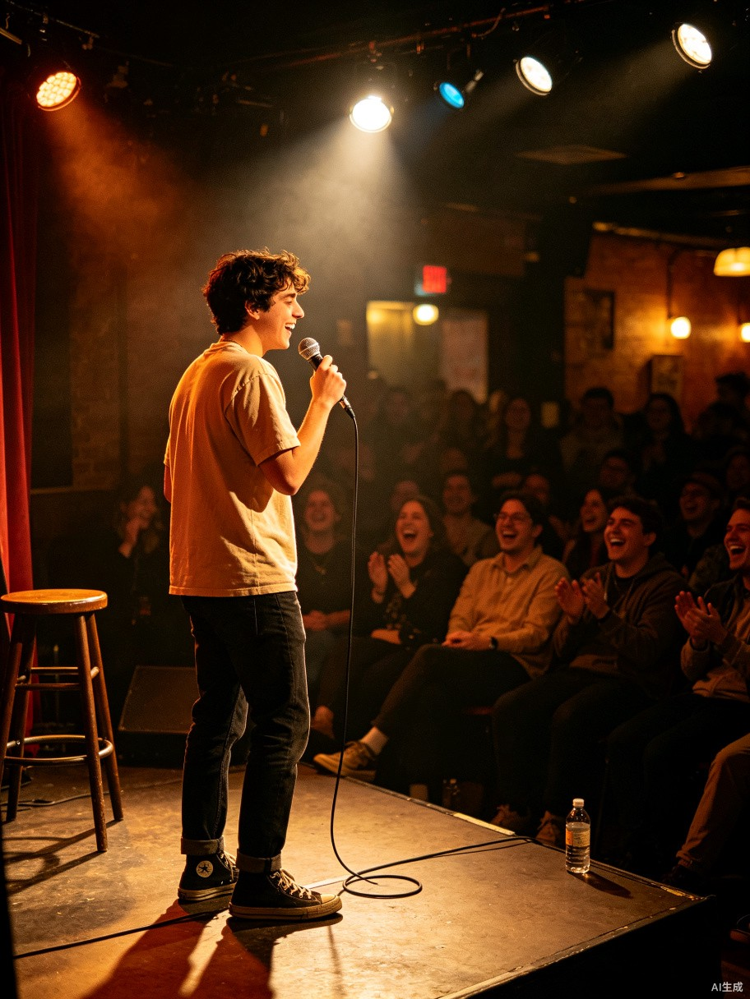

今日精选
咖啡店主理人的一天
早上7点到店，校准磨豆机，做3杯手冲，接待熟客，午后晒着太阳读一本旧书……
早上好，探索者
早上7点到店，校准磨豆机，做3杯手冲，接待熟客，午后晒着太阳读一本旧书……
当前竞价 ¥8,888 · 剩余23小时
 职业体验
职业体验
选路线、追光、街拍、修图、发一组九宫格。用镜头记录城市最温柔的角落。
 社交体验
社交体验
一杯威士忌，三段爵士，和陌生人聊一整晚。微醺里听见城市的心跳。
 生活方式
生活方式
搭帐篷、生火、看日落、星空下煮咖啡。把生活还给山野，把自己交给风。

社交体验写5个段子，开放麦上台3分钟，和演员宵夜。把尴尬变成笑点，把人生变成梗。
 出片型
出片型
穿搭建议、拍照路线、最佳光线时间点。在老洋房的梧桐影里，做一场巴黎梦。
 公益
公益
陪奶奶聊天、读报纸、喝下午茶，听她讲年轻时的故事
 公益
公益
打扫笼舍、喂食遛狗、给小猫洗澡，用一天换它们的快乐
 免费体验
免费体验
6点到花市挑花，8点回店修剪，扎一束属于自己的花带走
 免费体验
免费体验
整理书架、修补旧书、为客人推荐一本好书，喝一下午茶
6点公园晨跑、7点长椅读书、8点和陌生人交换一本书